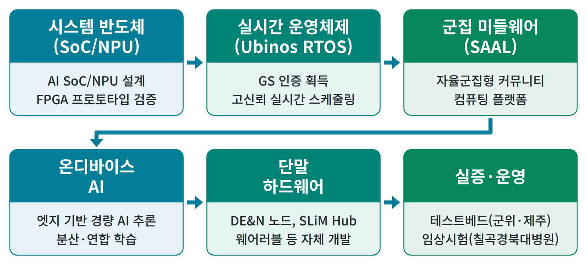

센터 소개
자율군집 소프트웨어 연구센터 (Center of Self-Organizing Software, CSOS)
- 2011년 지식경제부 차세대소프트웨어플랫폼 사업 공모에서 전국 24개 대학 중 1순위로 선정되어 설립된 경북대학교 부설 연구소입니다.
- IoT 단말에 자연계의 군집지능 개념을 도입한 자율군집 사물지능을 연구합니다.
- 중앙 서버나 게이트웨이 없이 단말들이 스스로 군집을 이루어 직접 또는 환경을 통해 간접 통신하는 군집형 IoT 단말에 특화된 연구센터입니다. 이에 필요한 통신 스택, 운영체제, 상황인지, 센서 및 액추에이터 연동 등의 시스템 소프트웨어를 자체 구현합니다.
- 시스템 반도체 (SoC, NPU) 부터 실시간 운영체제 (Ubinos RTOS), 군집 미들웨어 (SAAL), 온디바이스 AI, 단말 하드웨어, 실증 및 운영까지 자체 기술 체계를 갖춘 풀스택 플랫폼을 보유하고 있습니다.


현재 사업
| 항목 | 내용 |
|---|---|
| 중앙행정기관, 전문기관 | 교육부, 한국연구재단 |
| 사업명 | 이공학학술연구기반구축 (R&D), 내역사업 이공분야 대학중점연구소 |
| 과제명 | 거주환경 단말간 자율군집형 커뮤니티 컴퓨팅 기술 개발 (Research & Development of Self-Organized Community Computing Technology for Ambient Assisted Living) |
| 주관연구개발기관 | 경북대학교 자율군집소프트웨어연구센터 |
| 연구책임자 | 박대진 |
| 전체 기간 | 2018-06-01 ~ 2027-02-28 (8년 9개월) |
| 연구개발비 총계 | 6,888,140 천원 (전체 기간 합계, 정부지원 6,138,140 천원) |
| 국문 핵심어 | 사물컴퓨팅, 군집지능, 가상-물리시스템, 사회성 군집단말, 거주환경지원 삶 |
| 영문 핵심어 | IoT, Swarm Intelligence, Cyber-Physical System, Social IoT, Ambient Assisted Living |
인사말
자율군집 소프트웨어 연구센터 (CSOS) 를 찾아 주셔서 감사합니다.
우리 센터는 2011년 지식경제부 차세대소프트웨어플랫폼 사업 공모에서 전국 24개 대학 중 1순위로 선정되어 설립된 경북대학교 부설 연구소입니다. 2018년 교육부 이공분야 대학중점연구소로 선정되어 연구를 수행하고 있습니다.
우리 센터는 IoT 단말에 자연계의 군집지능 개념을 도입한 자율군집 사물지능을 연구합니다. 사람이 사물을 배우고 조작하는 대신, 사물이 사람을 알아보고 먼저 움직여 도와주는 세상 ("Living in my place with the help of intelligent things") 을 지향합니다. 이를 위해 시스템 반도체 (SoC, NPU) 부터 실시간 운영체제 (Ubinos RTOS), 군집 미들웨어 (SAAL), 온디바이스 AI, 실증 및 운영까지 자체 기술 체계를 갖추었습니다.
이 기술을 초기 치매와 경도인지장애 돌봄에 특화된 SAAL 플랫폼으로 구현하여, DEAN node, PAAR band, SlimHub 같은 단말이 생활공간 안에서 거주자의 일상생활 수행 (ADL) 을 스스로 인지하도록 하고 있습니다. 또한 센터가 보유한 기술을 스마트팜, 스마트오션 등 다른 응용분야로 넓혀 가고 있습니다.
우리 센터의 연구에 많은 관심과 참여를 부탁드립니다.
자율군집 소프트웨어 연구센터 센터장 박대진
비전과 목표
비전
- "Living in my place with the help of intelligent things"
- 사물이 사람을 알아보고 먼저 도와, 누구나 자신이 사는 곳에서 사물의 도움을 받으며 살아가는 세상을 만듭니다.
최종 목표
- 사물의 도움을 받으며 살아가는 세상을 실현합니다. 특히 인지기능 저하가 걱정되는 어르신이 자신의 거주환경에서 사물들의 도움을 받으며 살아갈 수 있게 합니다.
중장기 목표
- 최종 목표를 위해 다음 기술을 개발합니다.
- 거주환경 단말간 자율군집형 커뮤니티 컴퓨팅 기술 (SAAL): 거주환경의 IoT 단말들이 군집지능으로 서로 협력하여 사람을 돕는 기술
- 생활공간의 수많은 단말 (착용형, 이동형, 고정형) 이 거주자의 생활 방식과 사회적 관계를 반영하는 기술
- 단말들이 거주자의 행동을 보조하고 (assist), 잊은 일을 일깨워 주며 (remind), 잘못된 행동을 알아차려 스스로 도와주는 (eCoaching) 핵심기술
- SAAL 플랫폼을 스마트팜, 스마트오션 등 다른 응용분야로 확산합니다.
연혁
| 시기 | 내용 |
|---|---|
| 2011 | 지식경제부 차세대소프트웨어플랫폼 사업 공모에서 전국 24개 대학 중 1순위로 선정, CSOS 설립 |
| 2018-06 | 교육부 이공분야 대학중점연구소 선정 (거주환경 단말간 자율군집형 커뮤니티 컴퓨팅 기술 개발) |
| 2018-06 ~ 2024-02 | SAAL 플랫폼 2.0 (Ubinos 4.0, 비침습식 행동내역 수집 플랫폼) 개발 완료 |
| 2024-03 ~ 2025-02 | SAAL 플랫폼 3.0 초기 버전 개발 (DEAN 노드 1.0, SlimHub 3.0 프로토타입, 원격 빅데이터 서버, 스마트폰 앱 초기 버전) |
| 2024-11 | 교육부 우수 연구과제 50선 선정, 교육부 장관 표창 |
| 2025-03 ~ 2026-02 | SAAL 플랫폼 3.0 확장 및 실증 (DEAN 노드 3.0 개발, SlimHub 개선, 5 개 가구에 설치 운영) |
위치 및 연락처
- 주소: (41566) 대구광역시 북구 대학로 80 경북대학교 글로벌프라자 1309호
- 전화: 053-950-7891 (연구소), 7892 (행정)
- 팩스: 053-950-7867